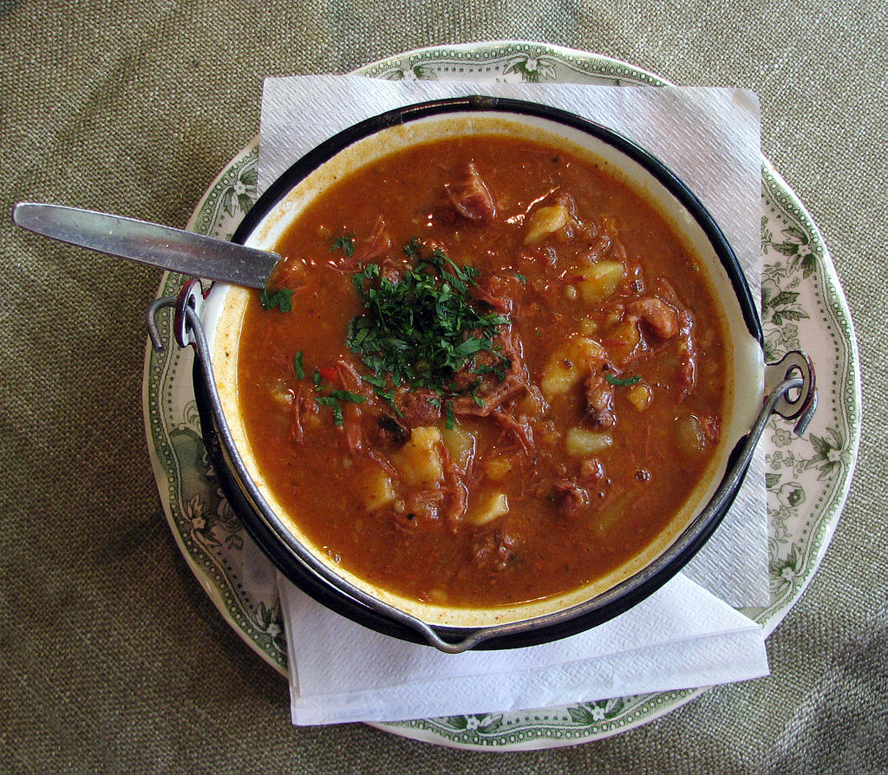
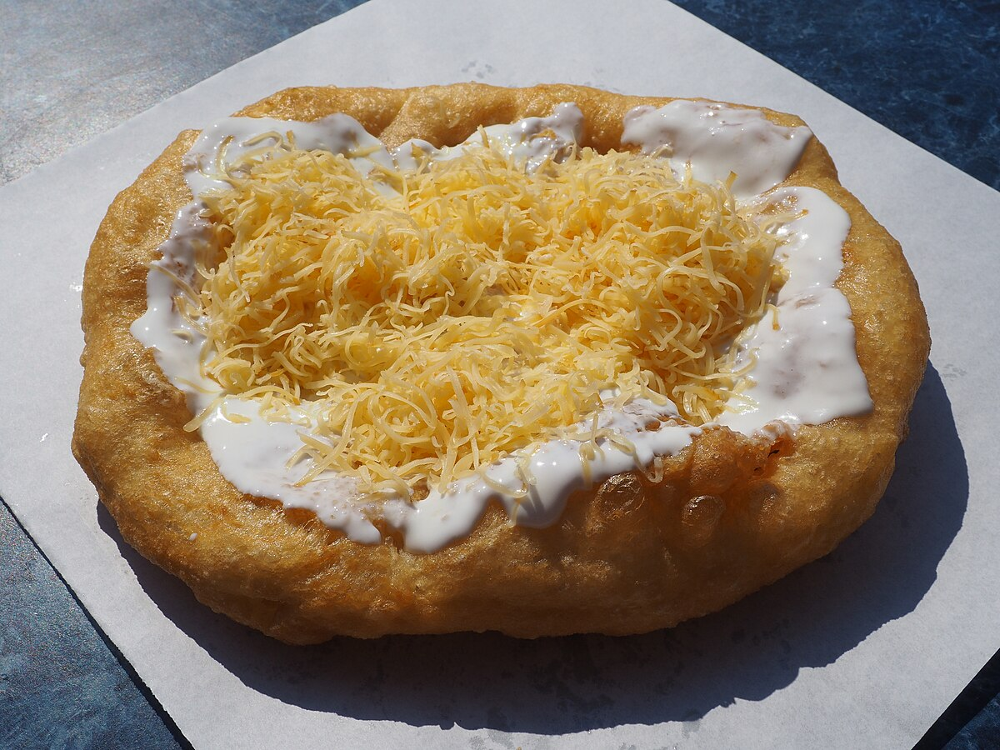

Ungersk Gulasch

En klassisk köttgryta med paprika och lök.
Köp paprika (affiliate)Köp nötkött (affiliate)
Lángos

Friterat bröd som ofta serveras med vitlök och gräddfil.
Köp mjöl (affiliate)Köp gräddfil (affiliate)
God mat som gör dig mätt

En klassisk köttgryta med paprika och lök.
Köp paprika (affiliate)
Friterat bröd som ofta serveras med vitlök och gräddfil.
Köp mjöl (affiliate)